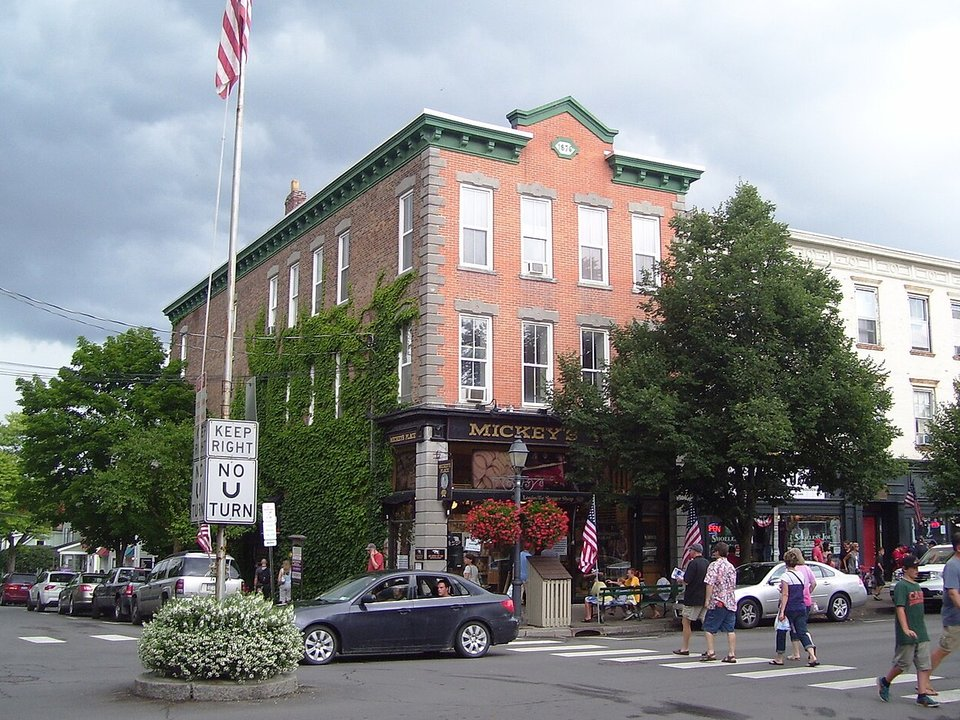

Otsego Lake · Resort
The Otesaga Resort Hotel
A grand 1909 resort on the lake, with golf.
Official details for The Otesaga Resort HotelBaseball, a lake and summer opera.
Cooperstown is a small village at the foot of Otsego Lake, best known as home of the National Baseball Hall of Fame. Land on the grass at Cooperstown-Westville, stay at the Otesaga Resort Hotel on the lake or the Inn at Cooperstown, spend a morning in the Hall of Fame, tour the Fenimore Art Museum, have a Belgian-style beer at Brewery Ommegang, and see an opera at the Glimmerglass Festival in summer.

Time illustration: direct distance at 150 KTAS plus 15 minutes for departure and arrival, matching the discovery page. Use ForeFlight for your actual flight plan.
K23, Cooperstown-Westville, is a non-towered public airport at 1,260 feet with a 2,337-foot turf runway, a few miles from the village.
Cooperstown-Westville Airport, Cooperstown, NY
Short turf runway: check surface conditions and performance before you go. Oneonta (N66) has a longer paved runway about 30 minutes away. Arrange a ride ahead. No live fuel price is shown.
Upstate New York flying: lake-effect snow and low ceilings from November to March, summer thunderstorms, morning valley fog, and icing in the cold months. About 570 nm from Myrtle Beach: plan a fuel stop and three nights.
Rates and availability need travel dates. Hall of Fame induction weekend in July books a year ahead.
A grand 1909 resort on the lake, with golf.
Official details for The Otesaga Resort HotelAn 1874 inn with a wide porch in the village.
Official details for The Inn at CooperstownInns and B&Bs.
This Is Cooperstown for More places to stayPrices and availability for your dates, through our partner Stay22. This is an affiliate link: we may earn a commission at no cost to you. The picks above are never paid.
Reserve weekend dinners.
Seasonal dinners on the lake at Sam Smith’s Boatyard.
Official details for Blue Mingo GrillBelgian-style beer and a café in the countryside.
Official details for Brewery OmmegangFresh cider, tastings and snacks.
Official details for Fly Creek Cider MillRestaurants in Cooperstown.
This Is Cooperstown for More restaurantsVisit the Hall of Fame early on summer days.
This prototype links to the local visitor site. It does not yet match events to your travel dates.
The village’s busiest weekend.
Baseball Hall of Fame for Hall of Fame InductionOpera season on the lake.
Glimmerglass Festival for Glimmerglass FestivalColor around Otsego Lake.
This Is Cooperstown for Fall colorCheck the local calendar when choosing a weekend, and confirm dates and tickets with the organizer.
A sample Cooperstown weekend. Plan three nights for the flight. No bookings or availability confirmed.
Land at K23 mid-morning.
Lunch on Main Street.
A short walk, then back to the airport.
Land at K23, subject to weather and your actual flight plan.
Walk Main Street.
Dinner at Blue Mingo Grill.
Baseball Hall of Fame.
Fenimore Art Museum.
An opera at Glimmerglass.
Brewery Ommegang.
Check the turf condition and performance for the 2,337-foot runway.
Afternoon thunderstorms are common in summer; leave in the morning.
Baseball Hall of Fame.
Explore.
Dinner in town.
These details make the difference between an appealing list and a usable getaway.
Lodging, then Glimmerglass tickets.
About 570 nm from Myrtle Beach: plan a fuel stop.
2,337 feet; use N66 if you need more.
May to October.
Research-based selections, not personal-visit endorsements. Researched November 1, 2026. Confirm hours, prices and availability directly with each place before booking. Spotted something out of date, or have a favorite we missed? Email us at hello@wingawayweekends.com.
WingAway Weekends helps you discover the destination. Use ForeFlight and current official aviation information for route, performance, weather, NOTAMs and preflight decisions. Flight planning and PIC responsibility stay with the pilot.